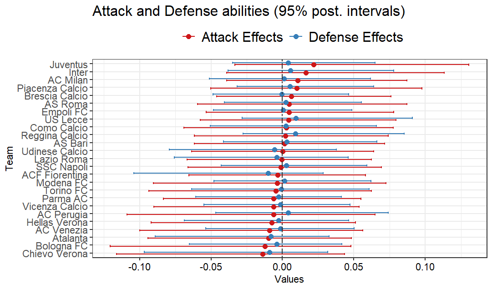

Does recent match performance improve Bayesian football forecasts beyond Elo ratings? Evidence from five European leagues
This working paper tests whether recent match-performance indicators improve Bayesian forecasts beyond what Elo ratings capture across five major European leagues.